Đăng Nhập Và Chuẩn Bị Tài Khoản
Người dùng chỉ cần tài khoản, mật khẩu và quyền phù hợp. Nếu không thấy một menu nào đó, nguyên nhân thường là tài khoản chưa được cấp quyền.
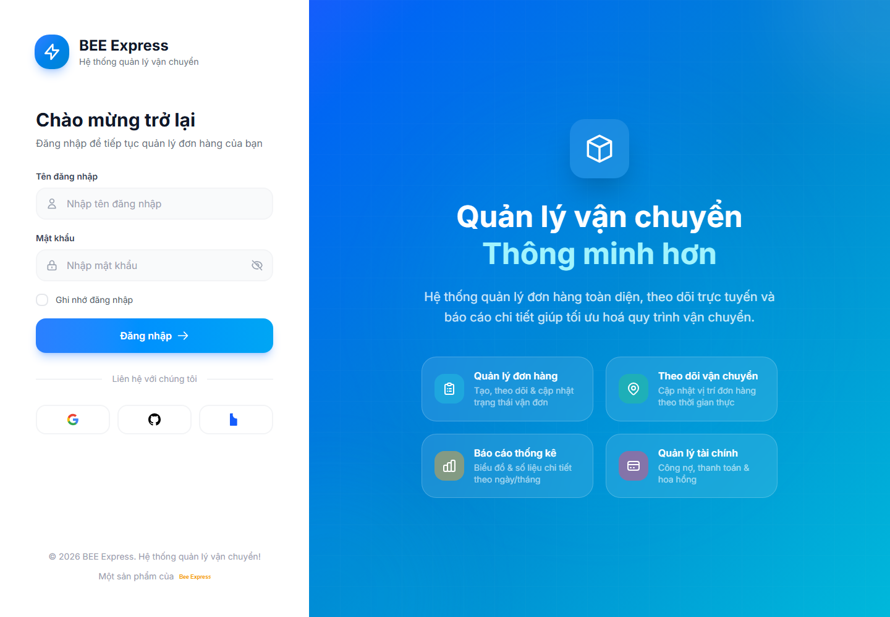
- Mở trang đăng nhậpTruy cập địa chỉ hệ thống do công ty cung cấp. Trên màn hình sẽ có logo BEE Express và form đăng nhập.
- Nhập tên đăng nhậpDùng tên đăng nhập được quản trị viên cấp. Một số tài khoản cũng có thể đăng nhập bằng email.
- Nhập mật khẩuNhập đúng mật khẩu, có thể bấm biểu tượng mắt để kiểm tra lại khi cần.
- Bấm Đăng nhậpSau khi đăng nhập thành công, hệ thống tự đưa bạn tới màn hình phù hợp theo quyền.
Làm Quen Với Màn Hình Chính
Hệ thống gồm menu bên trái, thanh tìm kiếm phía trên, khu vực nội dung ở giữa và thông tin tài khoản ở góc phải.
Menu bên trái
Chứa các phân hệ như Đơn hàng, Tạo đơn nhanh, Pickup, Công nợ, Hóa đơn, Địa chỉ, Nhân sự và Dữ liệu.
Thanh tìm kiếm
Tìm nhanh mã đơn, mã tracking hoặc thông tin liên quan. Phù hợp khi cần mở một đơn đang xử lý.
Thông tin tài khoản
Xem tên người dùng, vai trò, hồ sơ cá nhân và đăng xuất khi kết thúc làm việc.
| Vai trò | Người dùng thường làm gì | Menu hay dùng |
|---|---|---|
| Khách hàng / CTV | Tạo đơn, xem đơn của mình, theo dõi công nợ. | Tạo đơn nhanh, Đơn hàng, Địa chỉ gửi, Địa chỉ nhận, Công nợ khách hàng. |
| Sale / CS | Tạo đơn cho khách, hỗ trợ cập nhật thông tin, theo dõi vận chuyển. | Đơn hàng, Tạo đơn nhanh, Pickup, Tracking, Địa chỉ. |
| OPS / Shipper | Nhận hàng, pickup, quét kiện, cập nhật vận hành. | Pickup, Quét kiện hàng, Tải hàng. |
| Kế toán | Cập nhật giá, tạo công nợ, xác nhận thanh toán, xử lý hóa đơn. | Công nợ khách hàng, Công nợ đại lý, Hóa đơn thu, Cập nhật giá. |
| Admin / Quản lý | Quản trị toàn hệ thống, dữ liệu nền, nhân sự, cấu hình và báo cáo. | Dashboard, Đơn hàng, Dữ liệu, Nhân sự, Cấu hình, Nhật ký. |
Quy Trình Vận Hành Một Đơn Hàng
Đây là luồng làm việc từ lúc chuẩn bị dữ liệu đến khi giao hàng và thanh toán. Người mới nên nắm phần này trước khi thao tác.
Trạng thái đơn hàng
Hướng Dẫn Tạo Đơn Từ A-Z
Màn tạo đơn là nơi nhập đầy đủ thông tin gửi hàng. Hãy đi theo thứ tự từ trên xuống để tránh thiếu dữ liệu.
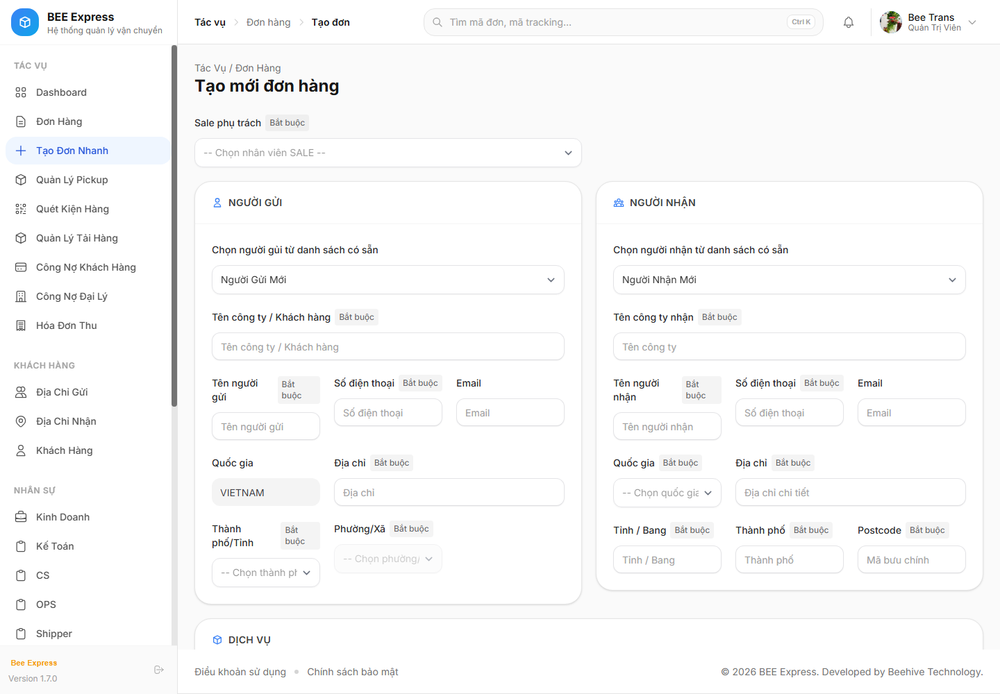
- Chọn sale phụ tráchChọn nhân viên sale quản lý khách hàng. Nếu bạn là sale hoặc CTV, hệ thống có thể tự gắn theo tài khoản.
- Nhập người gửiChọn địa chỉ có sẵn hoặc tạo mới. Cần nhập tên công ty, họ tên, số điện thoại và địa chỉ.
- Nhập người nhậnNhập công ty nhận, người nhận, số điện thoại, quốc gia, địa chỉ, tỉnh/bang, thành phố và mã bưu chính.
- Chọn dịch vụChọn dịch vụ chính trước. Sau đó chọn chi tiết dịch vụ, chi nhánh nhận hàng, hình thức gửi, lý do gửi và delivery term nếu cần.
- Khai báo kiện hàngNhập tên sản phẩm, loại kiện, số kiện, dài, rộng, cao và cân nặng thực tế.
- Thêm phụ phí và invoiceNếu có phụ phí hải quan hoặc khai báo hàng hóa, nhập từng dòng rõ ràng để kế toán và vận hành kiểm tra.
- Đọc quy định và tạo đơnTích đồng ý quy định tạo đơn, kiểm tra lại các trường bắt buộc, sau đó bấm Tạo đơn.
| Nhóm thông tin | Bắt buộc nhập | Lưu ý cho người dùng |
|---|---|---|
| Người gửi | Công ty hoặc khách hàng, họ tên, số điện thoại, địa chỉ. | Nên lưu vào danh bạ để lần sau chọn nhanh. |
| Người nhận | Công ty nhận, người nhận, số điện thoại, quốc gia, địa chỉ, postcode. | Postcode sai có thể làm chậm giao hàng hoặc báo giá không chính xác. |
| Dịch vụ | Dịch vụ chính và tên sản phẩm. | Nếu không thấy dịch vụ cần chọn, báo admin kiểm tra dữ liệu nền. |
| Kiện hàng | Số kiện, kích thước, cân nặng. | Cân tính cước lấy giá trị lớn hơn giữa cân thực và cân quy đổi. |
| Ảnh ghi chú | Không bắt buộc. | Tối đa 5 ảnh, mỗi ảnh tối đa 20 MB. |
Quản Lý Danh Sách, Chi Tiết Và Trạng Thái Đơn
Sau khi tạo đơn, người dùng theo dõi tại danh sách đơn và mở chi tiết để in chứng từ, tạo pickup, cập nhật giá hoặc nhập tracking.
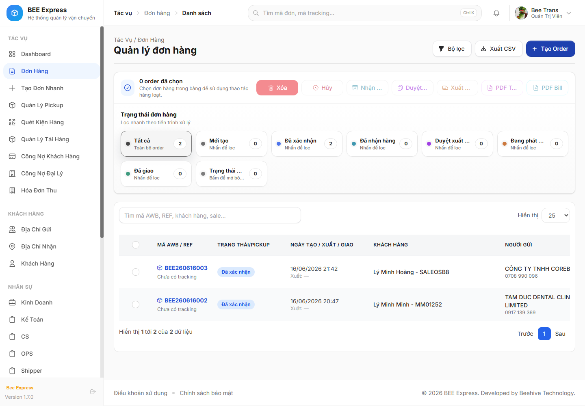
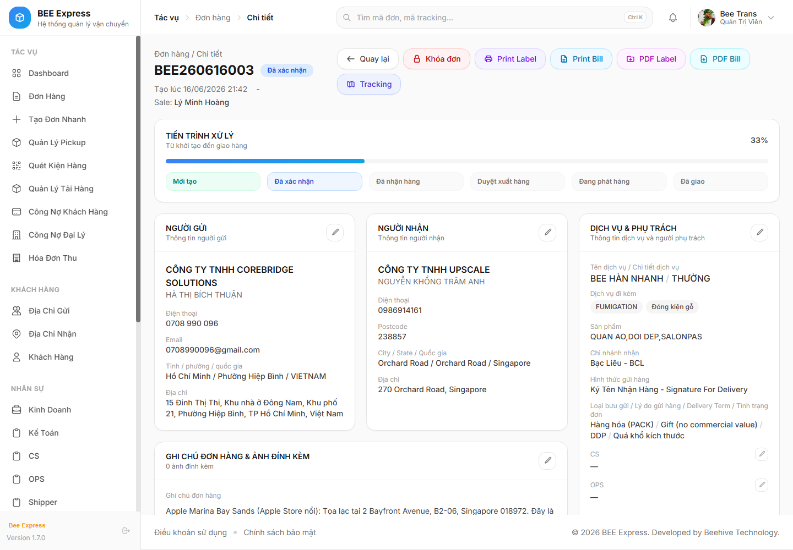
Các thao tác thường dùng
| Thao tác | Cách làm | Khi nào dùng |
|---|---|---|
| Tìm đơn | Nhập mã đơn hoặc mã tracking vào ô tìm kiếm. | Khi khách hỏi tình trạng hoặc cần mở lại đơn cũ. |
| Lọc đơn | Chọn trạng thái, khoảng ngày, sale, khách hàng hoặc dịch vụ. | Khi cần xem nhóm đơn đang xử lý, đã nhận hàng hoặc chờ phát. |
| In label / bill | Mở chi tiết đơn hoặc chọn nhiều đơn rồi xuất PDF. | Khi cần dán nhãn kiện, gửi bill hoặc in chứng từ. |
| Cập nhật trạng thái | Bấm nút trạng thái phù hợp trong chi tiết đơn. | Khi hàng đã xác nhận, đã nhận, đã xuất hoặc đã giao. |
| Khóa đơn | Admin có thể khóa đơn sau khi dữ liệu đã ổn định. | Khi cần tránh người khác sửa nhầm dữ liệu quan trọng. |
Cập Nhật Giá, Công Nợ Và Hóa Đơn Thu
Phần tài chính giúp kiểm soát cước bán, cước vốn, công nợ khách hàng, công nợ đại lý và xác nhận thanh toán.
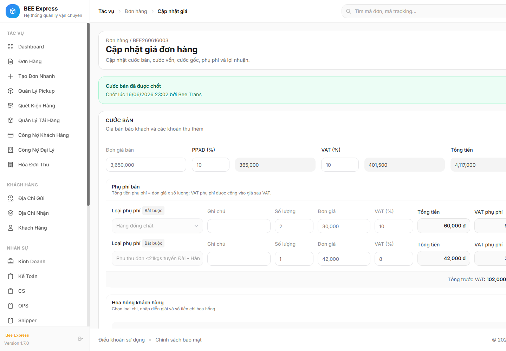
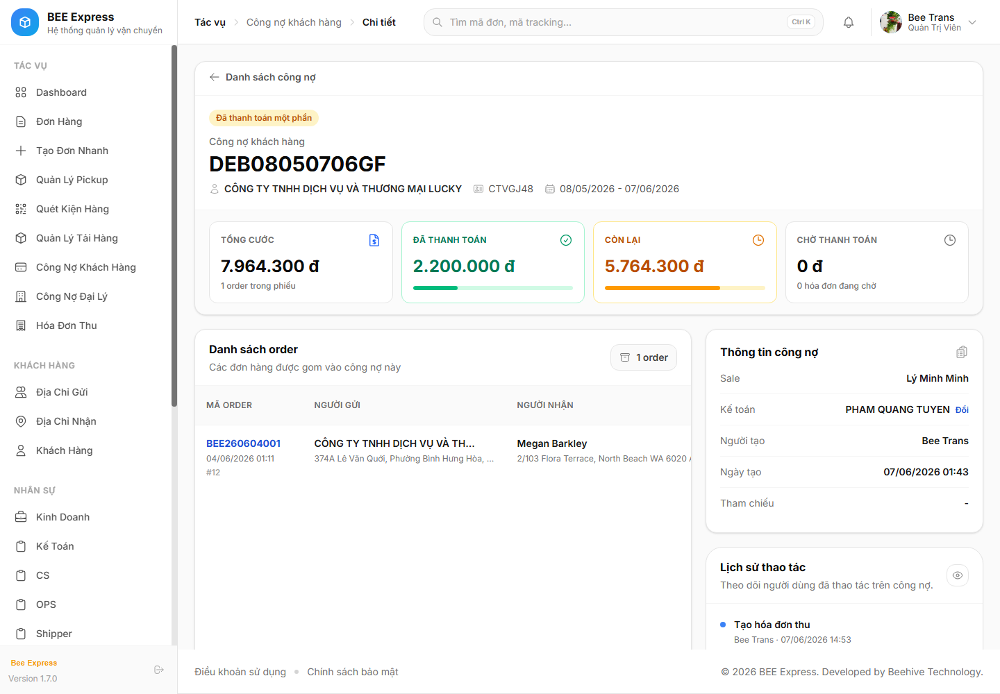
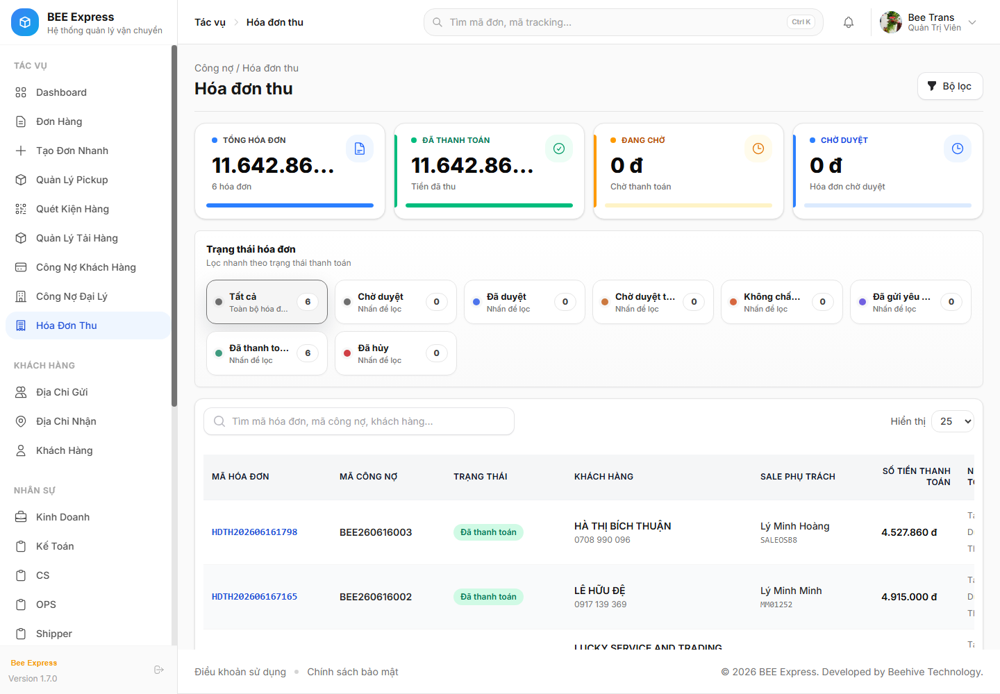
- Cập nhật giá cho đơnKế toán hoặc người có quyền mở chi tiết đơn, vào Cập nhật giá, nhập các khoản cước và lưu.
- Chốt giá bánKhi giá đã đúng, bấm chốt giá để tránh thay đổi ngoài ý muốn. Đơn đã chốt mới nên đưa vào công nợ.
- Tạo công nợChọn khách hàng, sale và kỳ ngày. Hệ thống lấy các đơn đủ điều kiện để gom vào công nợ.
- Tạo hóa đơn thuTừ công nợ hoặc đơn lẻ, tạo hóa đơn với số tiền cần thu. Có thể thu một phần hoặc toàn bộ.
- Xác nhận thanh toánVới tiền mặt, kiểm tra ảnh chứng từ. Với online, kiểm tra giao dịch hoặc QR trước khi xác nhận.
Pickup, Tải Hàng Và Tracking
Đây là nhóm chức năng giúp đội vận hành lấy hàng, gom hàng, duyệt xuất và cập nhật hành trình cho khách.
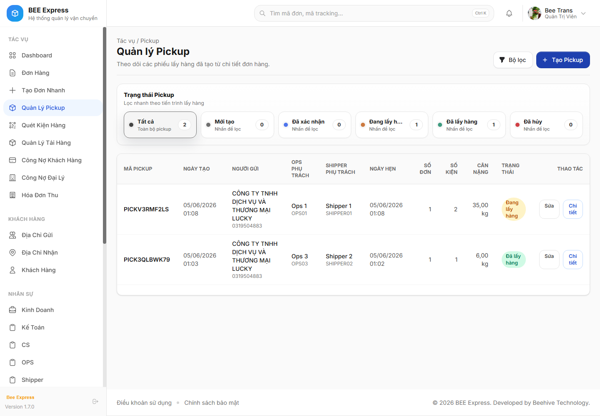
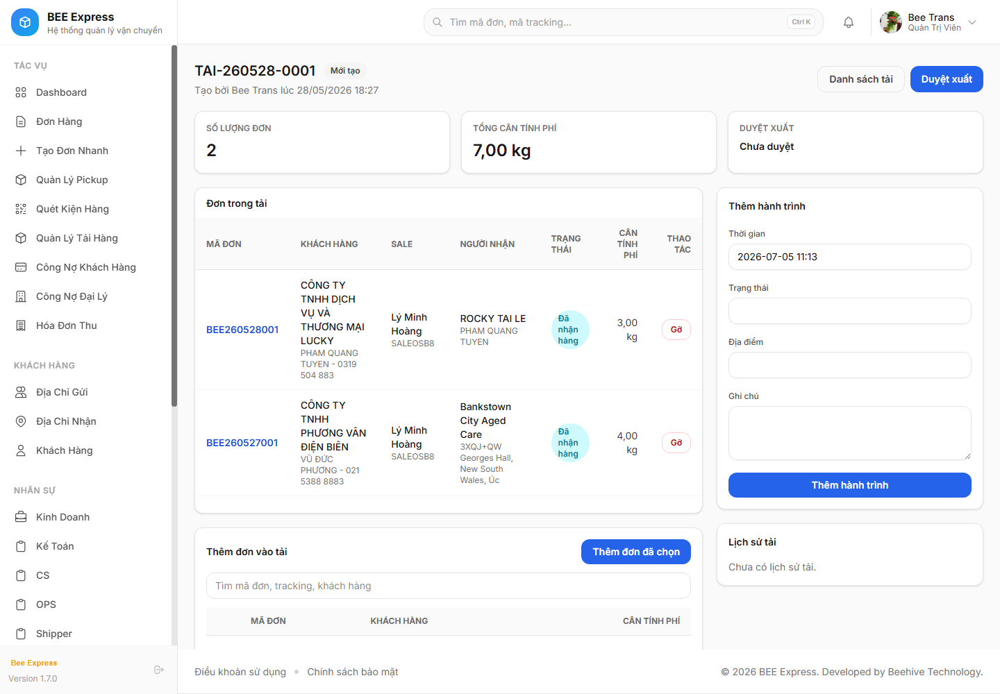
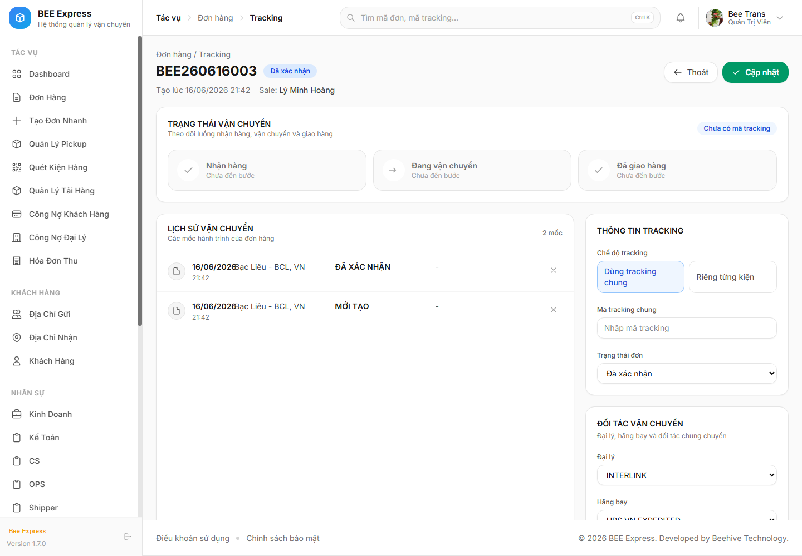
| Phân hệ | Người thường dùng | Quy trình ngắn |
|---|---|---|
| Pickup | CS, sale, OPS, shipper, quản lý. | Tạo pickup từ đơn, nhập lịch hẹn, phân công, lấy hàng, hoàn tất. |
| Tải hàng | OPS, CS, quản lý. | Chọn đơn đã nhận hàng, tạo lô, kiểm tra tổng cân, phê duyệt xuất. |
| Tracking | CS, OPS, quản lý. | Nhập courier, mã tracking, cập nhật trạng thái, kiểm tra timeline. |
| Quét kiện hàng | OPS, shipper hoặc tài khoản được cấp quyền. | Quét barcode trên label kiện, kiểm tra thông tin, xác nhận cập nhật trạng thái. |
Hướng Dẫn Quét Đơn Và Quét Kiện Hàng
Chức năng scan giúp đội vận hành cập nhật trạng thái nhanh bằng barcode trên label kiện hàng. Người dùng có thể dùng máy quét barcode, nhập mã kiện bằng tay hoặc dùng camera trên thiết bị mobile.
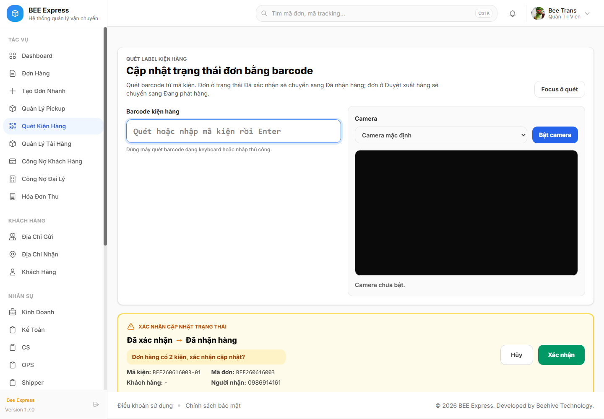
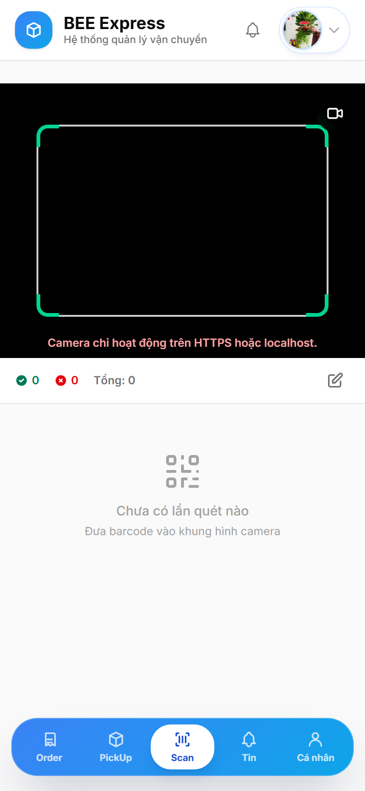
- Vào menu Quét Kiện HàngTrên máy tính, chọn menu Quét Kiện Hàng ở thanh bên trái. Trên thiết bị mobile, mở tab Scan.
- Chuẩn bị mã kiệnMã kiện nằm trên label kiện hàng, thường có dạng mã đơn kèm số kiện ở cuối, ví dụ phần cuối là -01 hoặc -02.
- Quét hoặc nhập mãDùng máy quét barcode dạng keyboard, nhập tay vào ô Barcode kiện hàng rồi bấm Enter, hoặc bật camera và đưa barcode vào khung hình.
- Kiểm tra thông tin hiện raKiểm tra mã kiện, mã đơn, khách hàng, người nhận và trạng thái chuẩn bị chuyển.
- Bấm Xác nhận nếu đúngChỉ bấm Xác nhận khi chắc chắn đang cầm đúng kiện. Nếu quét nhầm, bấm Hủy để không cập nhật trạng thái.
- Tiếp tục quét kiện tiếp theoSau khi xử lý xong một mã, đưa barcode tiếp theo vào máy quét hoặc camera. Hệ thống có nhật ký quét để đối chiếu.
Trạng thái được cập nhật khi scan
| Trạng thái hiện tại | Sau khi quét và xác nhận | Ý nghĩa nghiệp vụ |
|---|---|---|
| Đã xác nhận | Đã nhận hàng | Kho hoặc OPS xác nhận kiện đã được nhận vào hệ thống. |
| Duyệt xuất hàng | Đang phát hàng | Kiện đã qua bước duyệt xuất và bắt đầu chuyển sang giai đoạn phát. |
| Trạng thái khác | Không tự đổi trạng thái | Hệ thống chỉ hiển thị kết quả hoặc báo đơn đã được xử lý để tránh cập nhật sai. |
| Tình huống | Nguyên nhân thường gặp | Cách xử lý |
|---|---|---|
| Camera không bật | Trình duyệt chưa được cấp quyền camera hoặc đang dùng địa chỉ không hỗ trợ camera. | Cấp quyền camera, đóng ứng dụng khác đang dùng camera, hoặc dùng máy quét barcode/nhập tay. |
| Quét không ra đơn | Mã kiện không tồn tại, nhập sai ký tự hoặc quét nhầm mã không phải label kiện. | Kiểm tra lại label, nhập đúng mã kiện rồi thử lại. |
| Không có nút xác nhận | Đơn không nằm ở trạng thái được phép chuyển bằng scan. | Mở chi tiết đơn để kiểm tra trạng thái hiện tại và xử lý theo quy trình bình thường. |
| Không thấy menu scan | Tài khoản chưa được cấp quyền quét kiện hàng. | Liên hệ admin hoặc quản lý để kiểm tra quyền tài khoản. |
Quy Tắc Thêm, Xem, Sửa, Xóa Dữ Liệu
CRUD là cách gọi ngắn cho 4 thao tác cơ bản: thêm mới, xem danh sách, sửa thông tin và xóa dữ liệu. Người dùng không cần biết kỹ thuật, chỉ cần nhớ quy trình dưới đây.
Thêm mới
Bấm nút Thêm mới, nhập các trường bắt buộc, kiểm tra lại rồi bấm Lưu mới hoặc Lưu bảng giá.
Xem danh sách
Dùng ô tìm kiếm, bộ lọc và phân trang để tìm đúng dữ liệu. Không cần mở từng dòng nếu chỉ kiểm tra nhanh.
Sửa thông tin
Bấm biểu tượng sửa ở dòng cần chỉnh. Chỉ sửa khi chắc chắn dữ liệu mới đúng hơn dữ liệu cũ.
Xóa dữ liệu
Bấm biểu tượng xóa nếu có quyền. Không xóa dữ liệu đã được dùng trong đơn hàng, công nợ hoặc báo cáo nếu chưa kiểm tra.
| Trước khi lưu | Nên kiểm tra | Ví dụ |
|---|---|---|
| Trường bắt buộc | Các nhãn có chữ Bắt buộc phải được nhập. | Tên dịch vụ, tên công ty, số điện thoại, quốc gia. |
| Dữ liệu trùng | Không tạo hai dòng giống nhau nếu chỉ khác cách viết. | USA và United States nên thống nhất theo một tên. |
| Dữ liệu đang sử dụng | Không xóa nếu dữ liệu đã xuất hiện trong đơn cũ. | Dịch vụ chính đã dùng trong đơn hàng. |
| Ảnh hưởng báo giá | Bảng giá và DIM ảnh hưởng trực tiếp tới tra cước. | Sửa bảng giá Express US sẽ ảnh hưởng khách tra cước. |
Quản Lý Địa Chỉ Gửi Và Địa Chỉ Nhận
Danh bạ giúp tạo đơn nhanh hơn. Khi khách thường xuyên gửi hoặc nhận tại cùng địa chỉ, hãy lưu trước để chọn lại trong form tạo đơn.
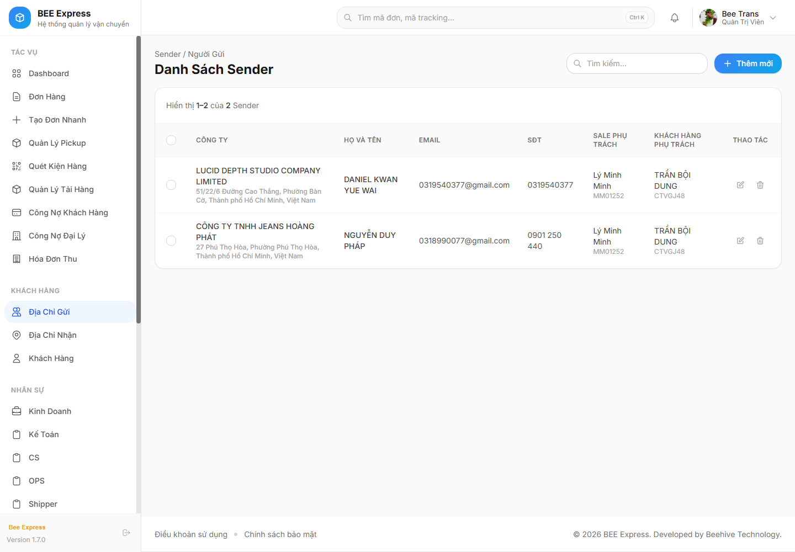
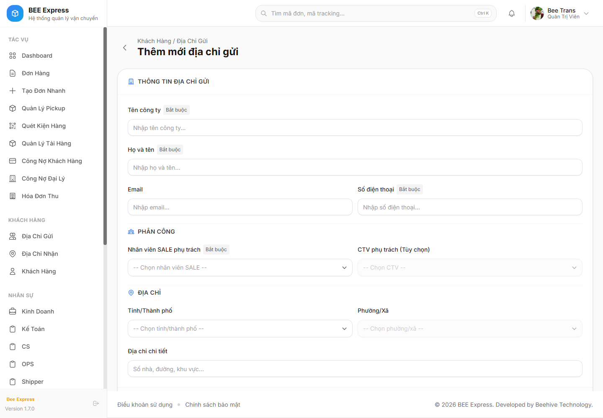
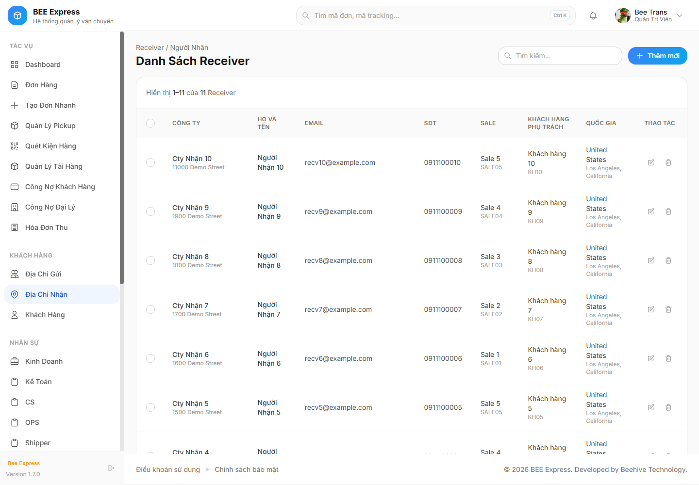
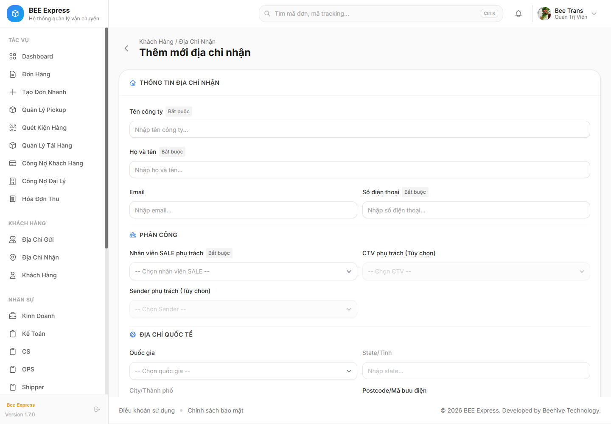
- Vào menu Địa Chỉ Gửi hoặc Địa Chỉ NhậnMenu nằm trong nhóm Khách hàng ở bên trái.
- Bấm Thêm mớiHệ thống mở form nhập thông tin. Các trường có nhãn Bắt buộc cần nhập đầy đủ.
- Gán người phụ tráchVới địa chỉ gửi, nên chọn sale hoặc CTV phụ trách để lọc dữ liệu về sau dễ hơn.
- Lưu và kiểm tra lạiSau khi lưu, quay về danh sách, tìm tên vừa tạo để chắc chắn dữ liệu đã xuất hiện.
Quản Lý CTV Và Tài Khoản Khách Hàng
CTV hoặc khách hàng là nhóm người có thể tự tạo đơn, xem đơn của mình và theo dõi công nợ tùy quyền được cấp.
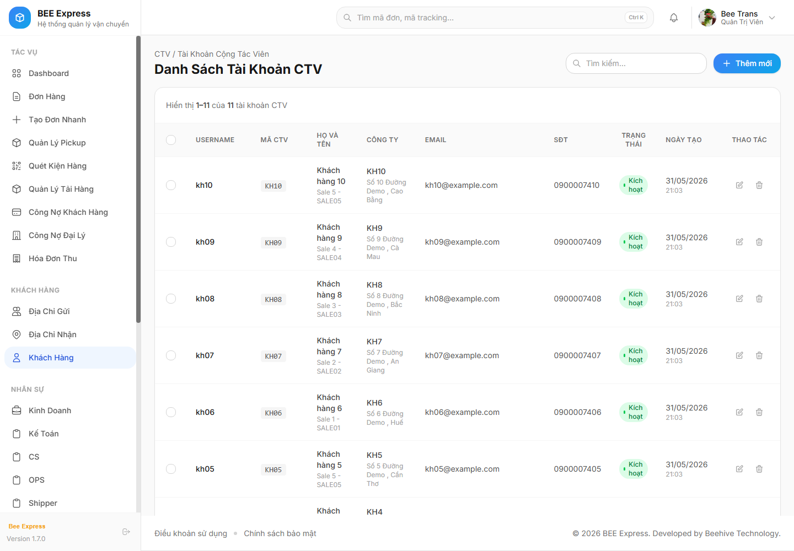
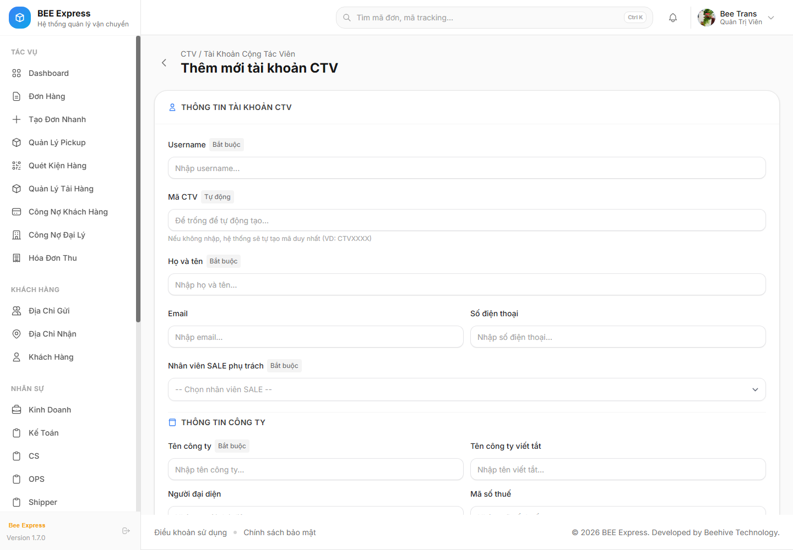
| Thông tin | Cách nhập | Lưu ý |
|---|---|---|
| Tên đăng nhập | Dùng tên dễ nhớ, không trùng tài khoản khác. | Nên thống nhất quy tắc đặt tên để dễ tìm. |
| Mật khẩu | Đặt mật khẩu ban đầu và yêu cầu người dùng đổi khi nhận tài khoản. | Không gửi mật khẩu qua kênh công khai. |
| Thông tin liên hệ | Nhập họ tên, số điện thoại, email, địa chỉ. | Dùng cho CS, sale và kế toán liên hệ khi cần. |
| Sale phụ trách | Gán sale nếu CTV thuộc một nhân viên kinh doanh. | Giúp lọc đơn và công nợ theo đúng người phụ trách. |
Quản Lý Dịch Vụ, Quốc Gia, Phụ Phí Và Bảng Giá
Dữ liệu nền là phần admin hoặc quản lý cần chuẩn bị trước. Nếu dữ liệu nền thiếu, người dùng sẽ không chọn được trong form tạo đơn hoặc tra cước không ra kết quả.
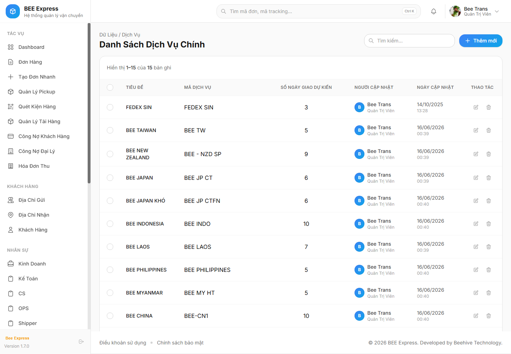
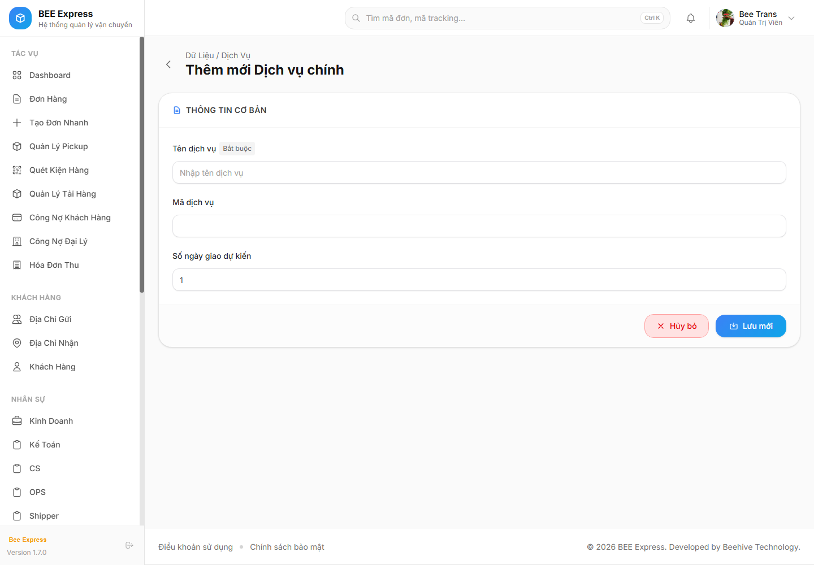
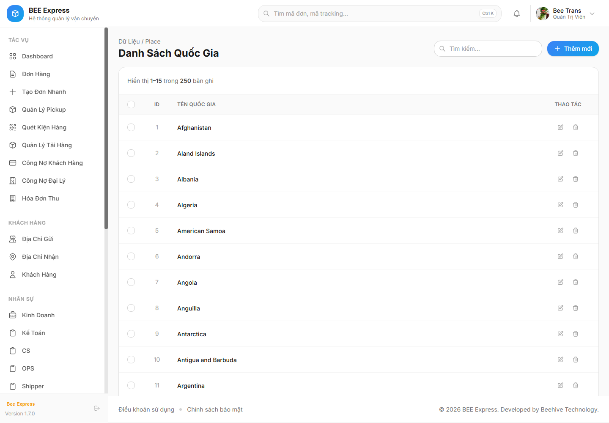
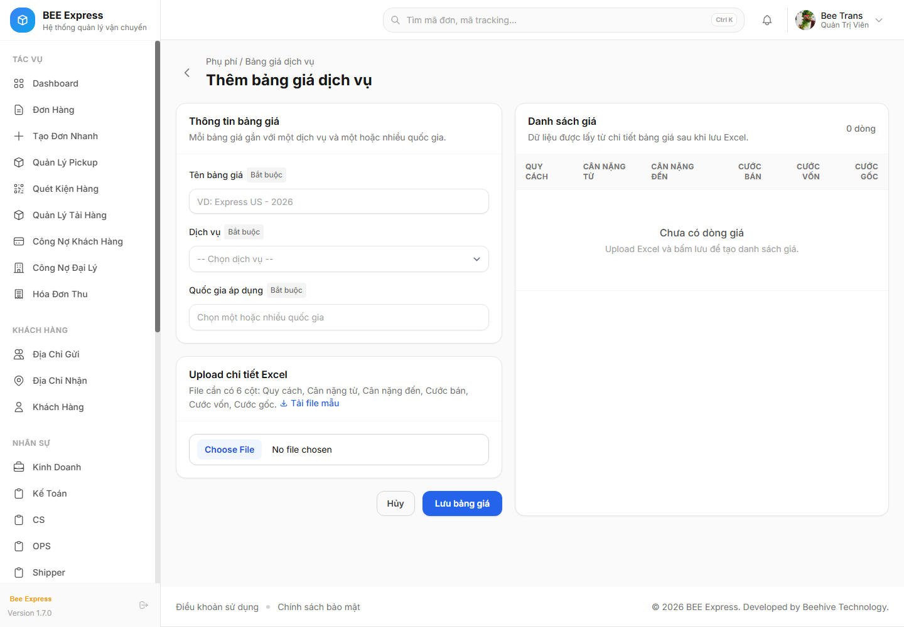
Những dữ liệu nền thường cần CRUD
| Nhóm dữ liệu | Dùng để làm gì | Ví dụ trường cần nhập |
|---|---|---|
| Dịch vụ | Cho người dùng chọn khi tạo đơn và tra cước. | Tên dịch vụ, mã dịch vụ, số ngày giao dự kiến. |
| Đơn vị | Quản lý loại kiện, hàng hóa hoặc nhóm đóng gói. | Tên loại kiện, số thứ tự hiển thị. |
| Phân loại | Bổ sung thông tin nghiệp vụ khi gửi hàng. | Loại bưu gửi, lý do gửi, hình thức gửi, delivery term. |
| Địa lý | Quản lý quốc gia, tỉnh/bang, thành phố. | Tên quốc gia, tỉnh/bang thuộc quốc gia, thành phố thuộc tỉnh/bang. |
| Đối tác | Theo dõi đại lý, hãng bay, đối tác chung chuyển. | Tên đại lý, tên hãng bay, tên đối tác. |
| Phụ phí | Tính các khoản phụ phí đơn hàng hoặc chi phí liên quan. | Tên phụ phí, giá phụ phí. |
| Bảng giá | Phục vụ tra cước và tham khảo giá bán. | Tên bảng giá, dịch vụ, quốc gia, file Excel chi tiết. |
Quản Lý Nhân Sự Và Phân Quyền
Nhân sự gồm kinh doanh, kế toán, CS, OPS, shipper và quản lý. Mỗi vai trò có phạm vi thao tác khác nhau.
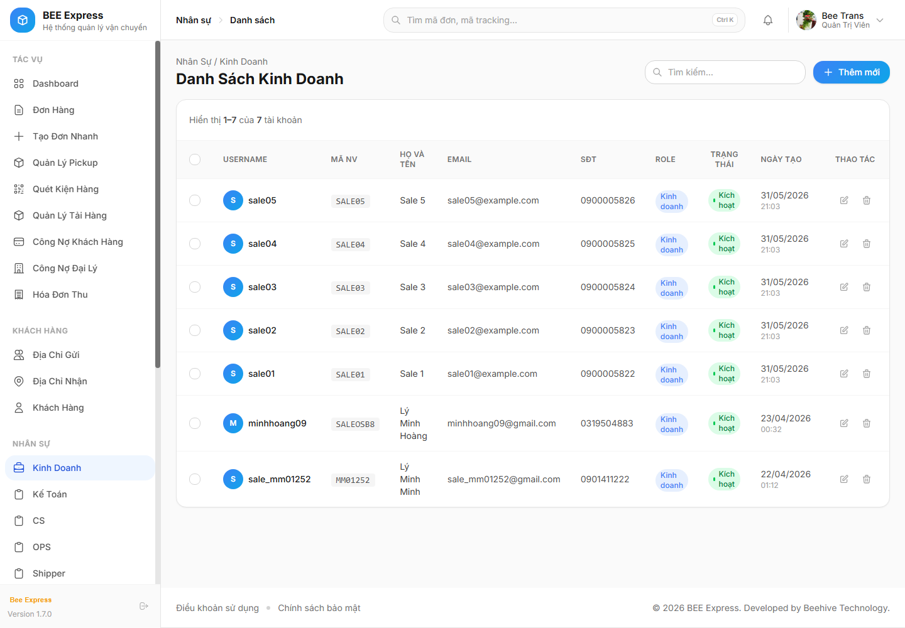
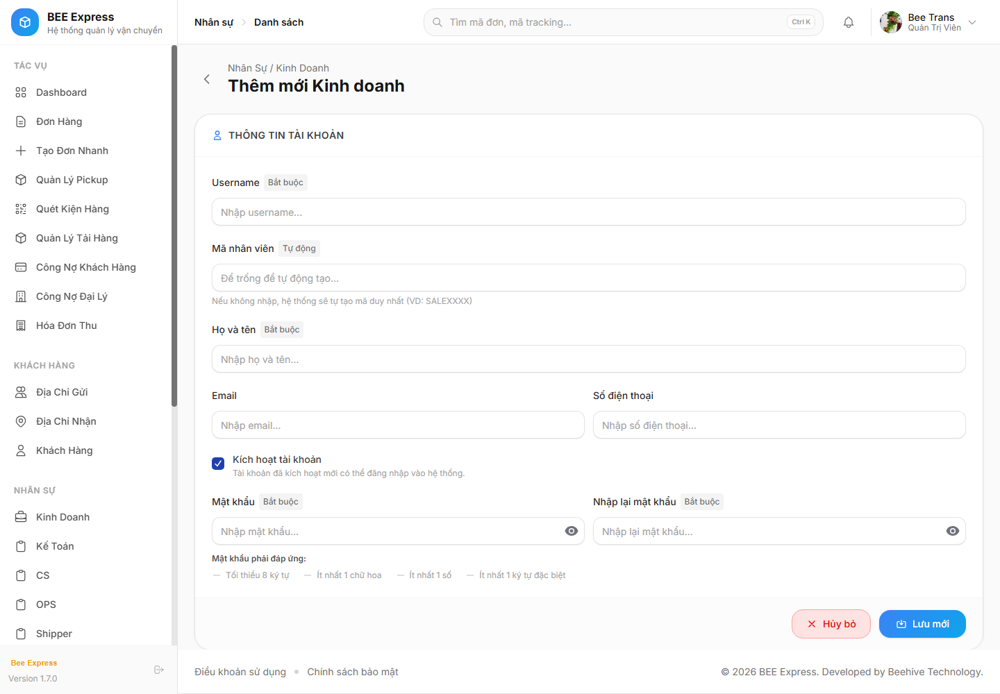
| Nhóm nhân sự | Nhiệm vụ chính | Không nên cấp nếu |
|---|---|---|
| Kinh doanh | Quản lý khách, tạo đơn, theo dõi đơn và công nợ khách của mình. | Người dùng không phụ trách khách hàng. |
| CS | Hỗ trợ khách, tạo và cập nhật đơn, theo dõi tracking, xử lý pickup. | Người dùng không tham gia chăm sóc khách. |
| OPS | Pickup, nhận hàng, quét kiện, tải hàng. | Người dùng chỉ làm tài chính hoặc sale. |
| Shipper | Đi lấy hàng và cập nhật pickup trên mobile. | Người dùng không đi tuyến. |
| Kế toán | Giá, công nợ, hóa đơn, xác nhận thanh toán. | Người dùng không xử lý số liệu tài chính. |
| Quản lý / Admin | Giám sát, cấu hình, xử lý ngoại lệ và phân quyền. | Không cần quyền quản trị toàn hệ thống. |
Hướng Dẫn Sử Dụng Toàn Bộ Mục Cài Đặt
Nhóm Cài đặt nằm tại địa chỉ /cai-dat, dùng để quản lý thông tin công ty, nhận diện thương hiệu, thông báo, mạng xã hội và các kết nối vận hành quan trọng của hệ thống.
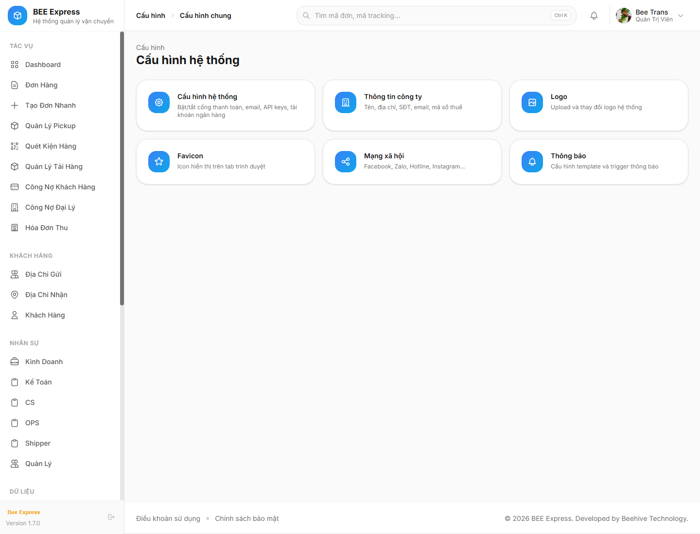
| Mục cài đặt | Dùng để làm gì | Ai nên thao tác |
|---|---|---|
| Cấu hình hệ thống | Bật/tắt thanh toán, hóa đơn điện tử, API tracking, email đơn hàng và bản đồ. | Admin hoặc người được giao quản trị vận hành. |
| Thông tin công ty | Cập nhật tên công ty, địa chỉ, số điện thoại, email, mã số thuế, website và DIM. | Admin, quản lý hoặc kế toán trưởng. |
| Logo | Thay logo hiển thị trong hệ thống và nhận diện thương hiệu. | Admin hoặc nhân sự phụ trách thương hiệu. |
| Favicon | Thay biểu tượng nhỏ trên tab trình duyệt. | Admin. |
| Banner | Thay ảnh banner đăng nhập. | Admin hoặc nhân sự phụ trách hình ảnh. |
| Mạng xã hội | Cập nhật Facebook, Zalo, Hotline, Instagram, YouTube, TikTok, Telegram và X. | Admin, CS hoặc marketing nếu được phân quyền. |
| Thông báo | Tạo thông báo nội bộ theo từng nhóm quyền như kế toán, vận hành, shipper, kinh doanh, quản lý. | Admin, quản lý, CS hoặc kế toán tùy quyền. |
1. Mở Và Chọn Mục Cài Đặt
- Vào menu Cấu hìnhỞ thanh menu bên trái, kéo xuống nhóm Cấu hình và bấm Cấu hình hệ thống.
- Chọn ô cần chỉnhMỗi ô là một nhóm chức năng. Ví dụ cần đổi logo thì bấm Logo, cần sửa email công ty thì bấm Thông tin công ty.
- Kiểm tra quyền tài khoảnNếu không thấy một ô nào đó, tài khoản có thể chưa được cấp quyền. Hãy liên hệ admin để kiểm tra.
- Sửa xong phải bấm lưuCác thay đổi trong mục cài đặt chỉ có hiệu lực sau khi bấm nút Lưu cấu hình, Lưu thay đổi hoặc Lưu ảnh tùy từng màn hình.
2. Cấu Hình Hệ Thống
Màn hình Cấu hình hệ thống có 5 tab chính: Thanh toán, Hóa đơn, API, Email và Bản đồ. Đây là phần ảnh hưởng trực tiếp đến việc khách thanh toán, phát hành hóa đơn, gửi email, tra cứu đối tác và hiển thị bản đồ.
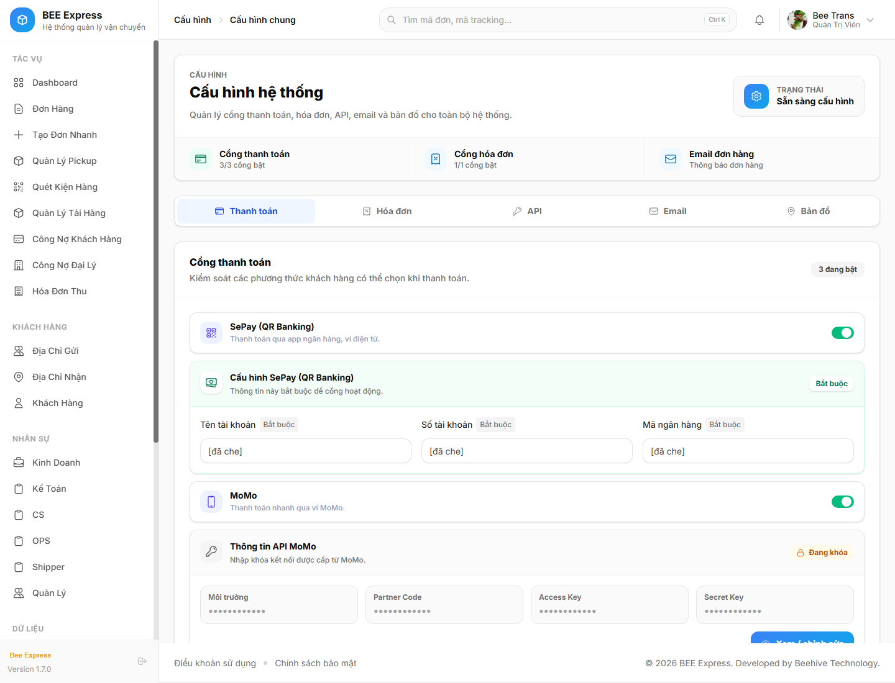
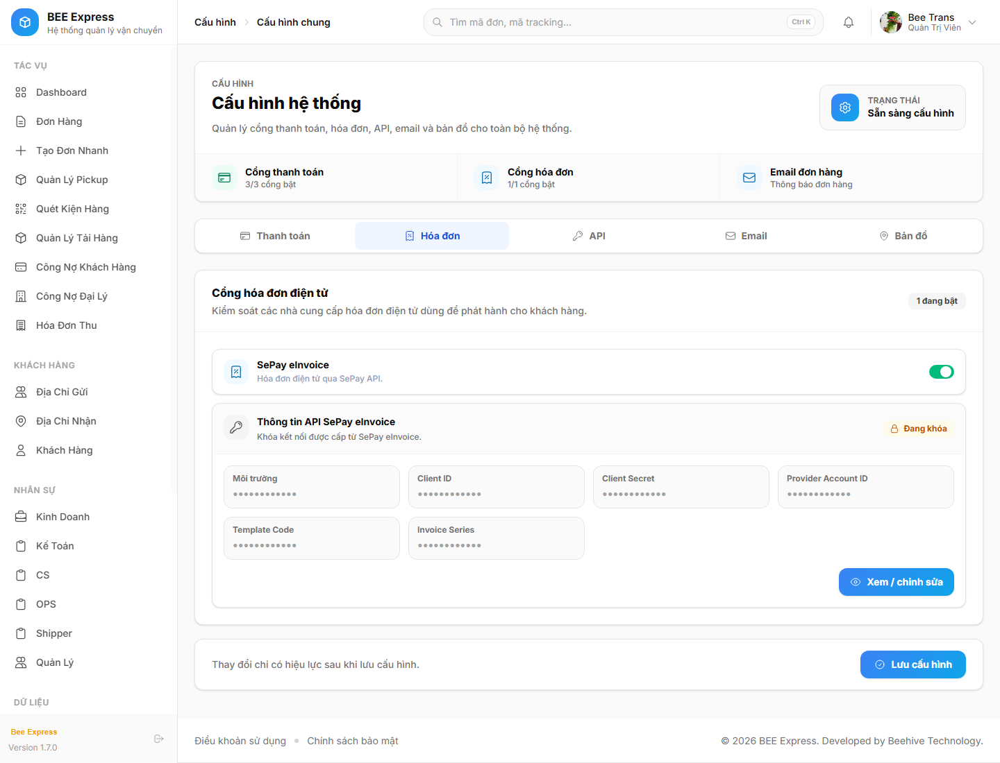
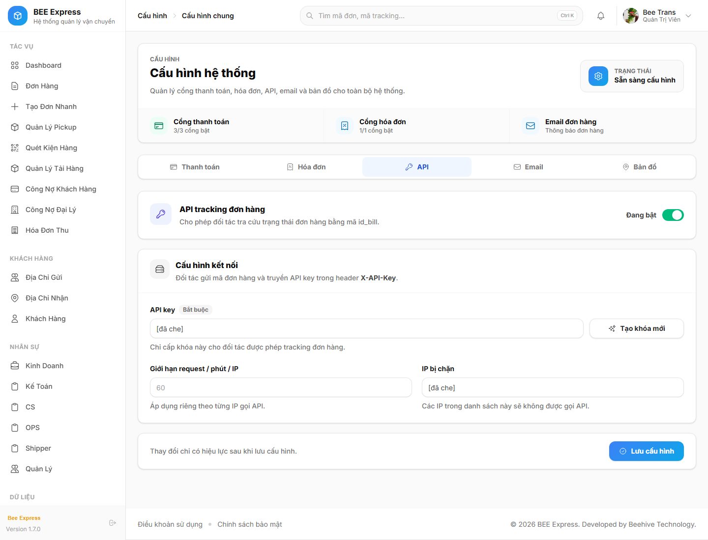
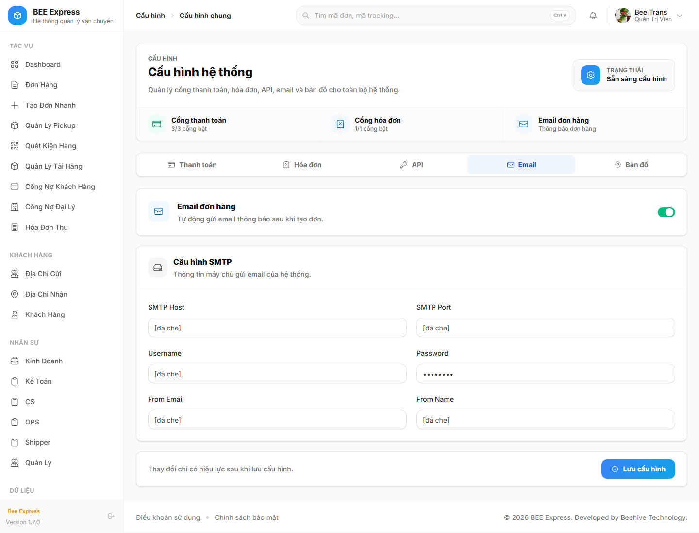
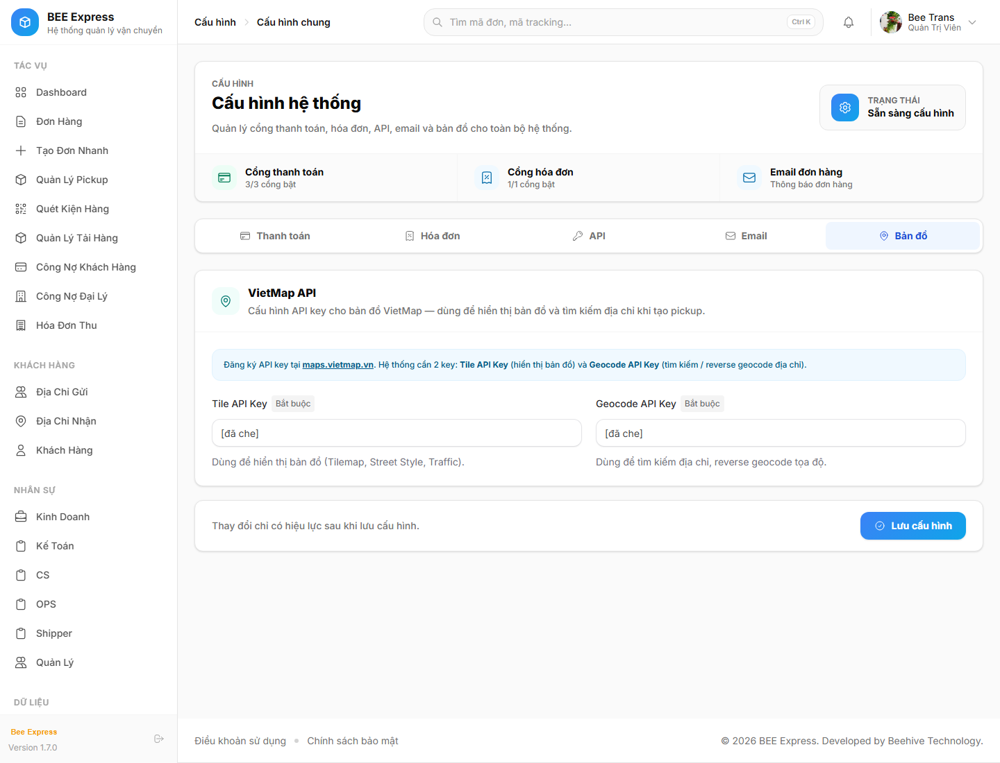
| Tab | Cách sử dụng | Lưu ý quan trọng |
|---|---|---|
| Thanh toán | Bật công tắc của cổng thanh toán cần dùng, nhập thông tin bắt buộc, sau đó bấm Lưu cấu hình. | Nên kiểm tra lại số tài khoản, mã ngân hàng, môi trường kết nối trước khi cho khách dùng thật. |
| Hóa đơn | Bật nhà cung cấp hóa đơn điện tử, nhập thông tin được đơn vị hóa đơn cung cấp. | Sai mẫu hóa đơn hoặc chuỗi hóa đơn có thể làm phát hành lỗi, cần kiểm thử trước. |
| API | Bật API tracking đơn hàng, tạo khóa mới nếu cần cấp cho đối tác, đặt giới hạn request và IP bị chặn. | Chỉ gửi khóa API cho đối tác được phép. Khi nghi ngờ lộ khóa, hãy tạo khóa mới. |
| Bật email đơn hàng, nhập SMTP Host, Port, Username, Password, From Email và From Name. | Nên gửi thử một đơn sau khi lưu để chắc chắn email đi được. | |
| Bản đồ | Nhập Tile API Key và Geocode API Key của VietMap. | Nếu bản đồ không hiển thị hoặc không tìm được địa chỉ, hãy kiểm tra lại khóa bản đồ. |
3. Thông Tin Công Ty
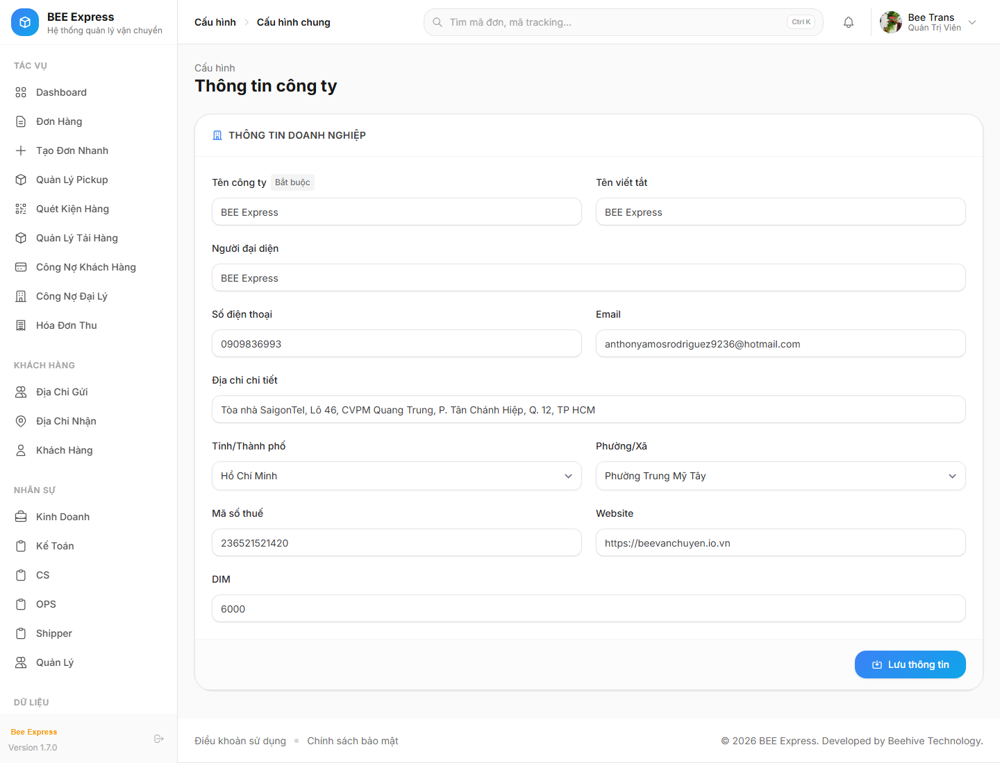
- Nhập tên công ty và tên viết tắtDùng đúng tên pháp lý nếu phục vụ hóa đơn, hoặc tên thương hiệu nếu chỉ dùng cho hiển thị nội bộ.
- Nhập người đại diện và thông tin liên hệCập nhật số điện thoại, email, website để khách và nhân viên liên hệ đúng đầu mối.
- Nhập địa chỉĐiền địa chỉ chi tiết, tỉnh/thành phố và phường/xã nếu hệ thống yêu cầu.
- Nhập mã số thuếKế toán nên kiểm tra kỹ mã số thuế trước khi dùng cho hóa đơn hoặc chứng từ.
- Kiểm tra DIMDIM ảnh hưởng đến cách tính cân quy đổi khi tạo đơn và tra cước. Không tự ý đổi nếu chưa thống nhất với vận hành và kế toán.
4. Logo, Favicon Và Banner
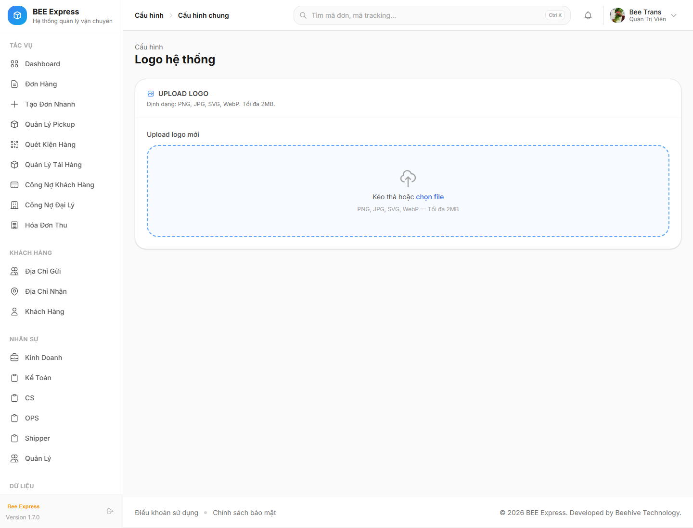
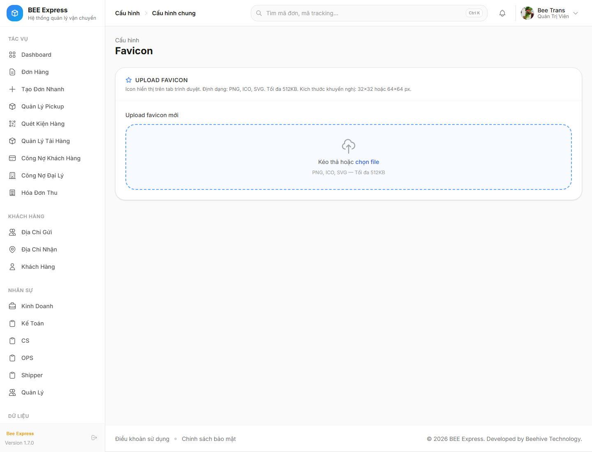
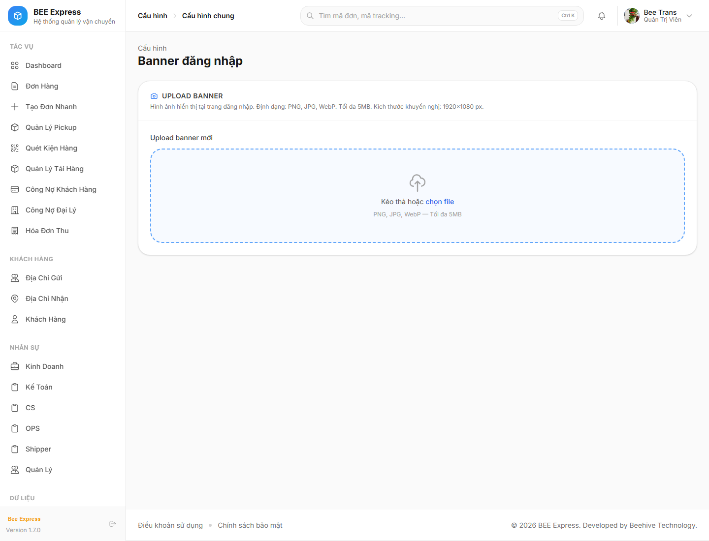
- Chuẩn bị ảnh đúng kích thướcLogo nên rõ nét trên nền sáng. Banner nên đủ rộng để không bị vỡ hình trên màn hình lớn.
- Bấm chọn file hoặc kéo thảChọn ảnh từ máy tính. Nếu ảnh quá nặng hoặc sai định dạng, hệ thống sẽ không cho lưu.
- Lưu và tải lại trangSau khi lưu, tải lại trang đăng nhập hoặc mở tab mới để kiểm tra hình đã đổi chưa.
- Giữ lại file cũNên lưu bản logo/banner cũ trên máy trước khi thay để có thể khôi phục khi cần.
5. Mạng Xã Hội Và Kênh Liên Hệ
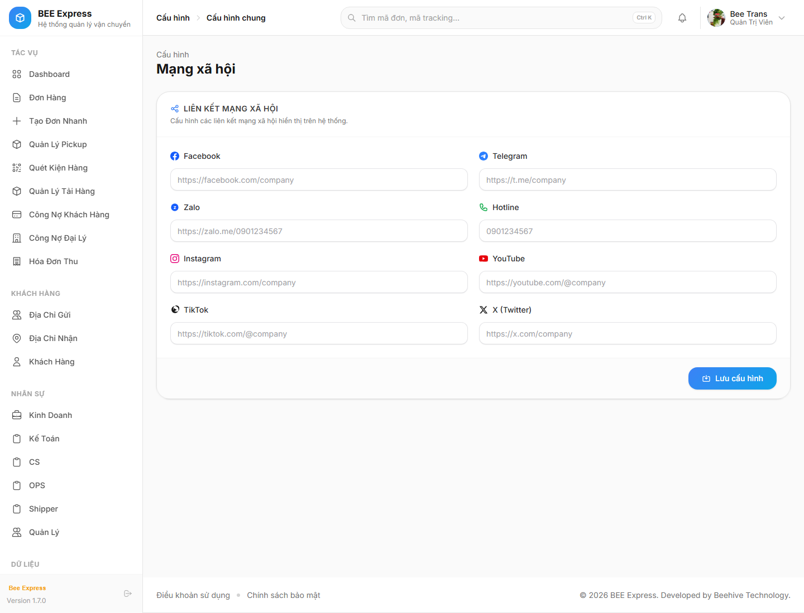
| Trường | Cách nhập | Nên kiểm tra |
|---|---|---|
| Facebook, Instagram, YouTube, TikTok, X | Dán đường dẫn đầy đủ bắt đầu bằng https://. | Mở thử link sau khi lưu để chắc chắn không sai trang. |
| Zalo | Dán link Zalo OA hoặc link số điện thoại theo mẫu hệ thống gợi ý. | Kiểm tra trên điện thoại vì Zalo thường mở tốt nhất trên mobile. |
| Hotline | Nhập số điện thoại đang dùng để chăm sóc khách. | Không nhập khoảng trắng hoặc ký tự lạ nếu hệ thống yêu cầu số thuần. |
| Telegram | Dán link nhóm, kênh hoặc tài khoản hỗ trợ. | Chỉ dùng kênh chính thức của công ty. |
6. Thông Báo Hệ Thống
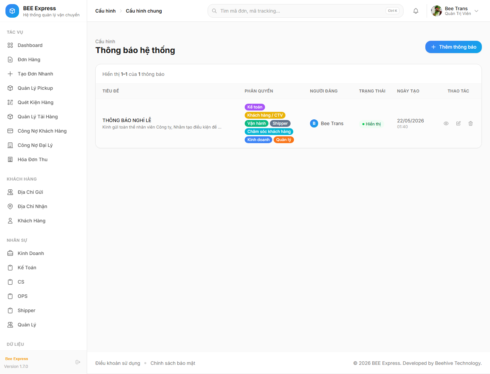
- Bấm Thêm thông báoDùng khi cần thông báo nghỉ lễ, thay đổi quy trình, điều chỉnh bảng giá hoặc nhắc việc vận hành.
- Nhập tiêu đề rõ ràngTiêu đề nên ngắn, nêu đúng nội dung chính. Ví dụ: Thông báo nghỉ lễ 30/4 - 1/5.
- Nhập nội dung chi tiếtNêu thời gian áp dụng, việc cần làm, người chịu trách nhiệm và kênh liên hệ khi có thắc mắc.
- Chọn nhóm người nhậnChỉ chọn các nhóm liên quan như kế toán, vận hành, shipper, CS, kinh doanh hoặc quản lý.
- Bật hoặc tắt hiển thịNếu thông báo chưa sẵn sàng, có thể tắt hiển thị rồi bật lại khi cần công bố.
- Không thay đổi cấu hình thanh toán, hóa đơn, email, API hoặc bản đồ trong giờ cao điểm nếu chưa có người kiểm tra sau khi lưu.
- Sau khi đổi thông tin công ty, hãy kiểm tra lại chứng từ, hóa đơn, email và trang công khai.
- Sau khi đổi logo, favicon hoặc banner, hãy tải lại trình duyệt để tránh nhìn thấy ảnh cũ do bộ nhớ đệm.
- Sau khi tạo thông báo, đăng nhập bằng tài khoản thuộc nhóm nhận để kiểm tra thông báo có hiển thị đúng không.
| Lỗi thường gặp trong Cài đặt | Nguyên nhân | Cách xử lý |
|---|---|---|
| Không thấy mục Cấu hình hệ thống | Tài khoản chưa có quyền admin. | Liên hệ quản trị viên để được cấp quyền phù hợp. |
| Bấm lưu nhưng báo thiếu dữ liệu | Chưa nhập trường bắt buộc hoặc nhập sai định dạng. | Kiểm tra các nhãn Bắt buộc, nhập lại đúng mẫu rồi lưu. |
| Ảnh mới chưa hiển thị | Trình duyệt còn lưu ảnh cũ. | Tải lại trang, mở tab ẩn danh hoặc xóa bộ nhớ đệm trình duyệt. |
| Email không gửi | Sai SMTP Host, Port, Username, Password hoặc tài khoản email chưa cho phép gửi. | Kiểm tra lại cấu hình email và gửi thử một đơn mới. |
| Đối tác không gọi được API tracking | Sai khóa API, vượt giới hạn request hoặc IP bị chặn. | Kiểm tra khóa, giới hạn request, danh sách IP bị chặn và trạng thái bật API. |
Tra Cước Và Theo Dõi Vận Đơn Công Khai
Khách hàng có thể tự tra cước tham khảo và theo dõi hành trình mà không cần đăng nhập.
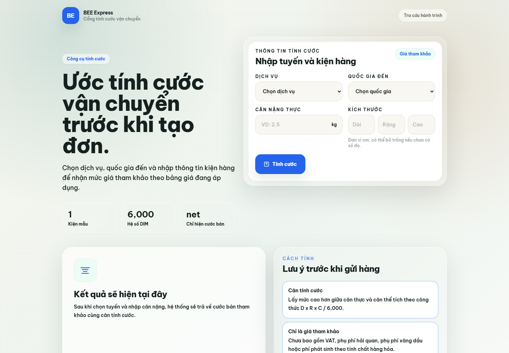
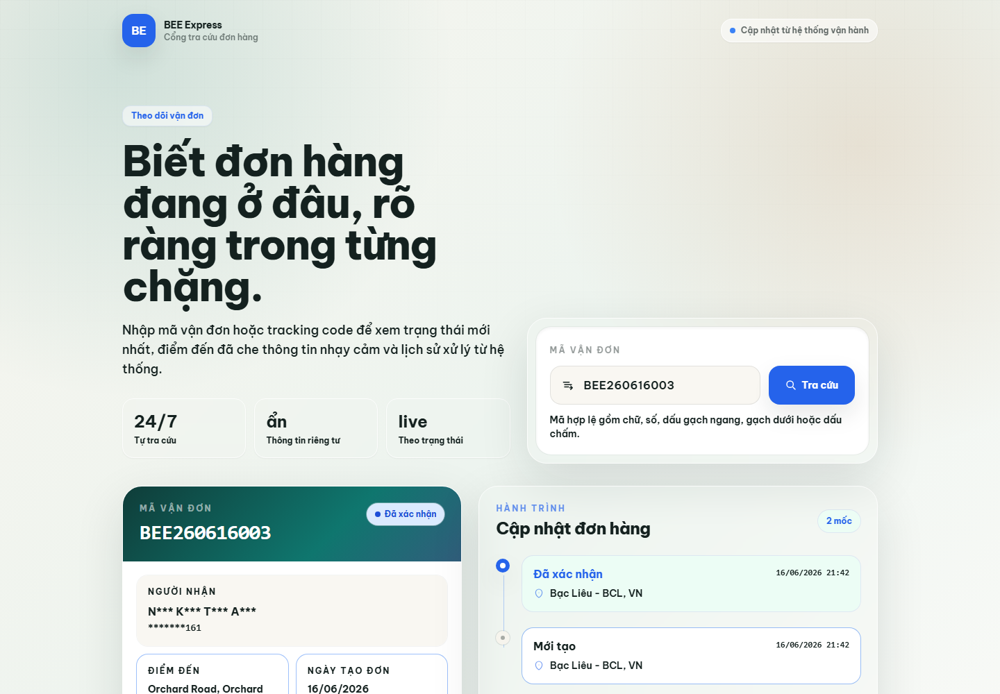
| Công cụ | Khách cần nhập | Lưu ý |
|---|---|---|
| Tra cước | Dịch vụ, quốc gia, cân nặng, dài, rộng, cao. | Kết quả là giá tham khảo, có thể chưa bao gồm VAT, hải quan hoặc phụ phí phát sinh. |
| Theo dõi vận đơn | Mã vận đơn hoặc mã tracking. | Thông tin cá nhân người nhận được che bớt để bảo vệ riêng tư. |
Lỗi Thường Gặp Và Cách Xử Lý
Khi gặp lỗi, hãy đọc thông báo trên màn hình trước. Phần lớn lỗi đến từ thiếu trường bắt buộc, sai quyền hoặc dữ liệu nền chưa được tạo.
| Tình huống | Nguyên nhân thường gặp | Cách xử lý |
|---|---|---|
| Không đăng nhập được | Sai tên đăng nhập, sai mật khẩu hoặc tài khoản bị khóa. | Kiểm tra lại thông tin, sau đó liên hệ quản trị viên nếu vẫn không vào được. |
| Không thấy menu cần dùng | Tài khoản chưa được cấp quyền phù hợp. | Báo quản lý hoặc admin kiểm tra vai trò tài khoản. |
| Không tạo được đơn | Thiếu người gửi, người nhận, dịch vụ, postcode hoặc kích thước kiện. | Kiểm tra các nhãn Bắt buộc trong form tạo đơn. |
| Tra cước không có kết quả | Thiếu bảng giá cho dịch vụ, quốc gia hoặc khoảng cân nặng. | Admin kiểm tra bảng giá dịch vụ và file Excel đã nhập. |
| Không thấy đơn trong tải hàng | Đơn chưa ở trạng thái Đã nhận hàng hoặc đã thuộc tải hàng khác. | Kiểm tra trạng thái đơn và lịch sử tải hàng. |
| Không tạo được công nợ | Đơn chưa chốt giá, đã hủy hoặc đã nằm trong công nợ khác. | Chốt giá bán và kiểm tra công nợ hiện có trước khi tạo mới. |
| Không xác nhận được thanh toán | Hóa đơn chưa đúng trạng thái hoặc thiếu chứng từ. | Kiểm tra trạng thái hóa đơn, ảnh chứng từ và kênh thanh toán. |
Checklist Vận Hành Hằng Ngày
Dùng checklist này để đào tạo nhân viên mới hoặc kiểm tra công việc cuối ngày.
Trước khi tạo đơn
- Dịch vụ và quốc gia đã có trong dữ liệu nền.
- Địa chỉ gửi và nhận được nhập đúng.
- Cân nặng, kích thước và số kiện có đủ.
- Invoice khai báo rõ tên hàng, số lượng và giá trị.
Trong ngày vận hành
- Kiểm tra đơn mới tạo và đơn chờ xác nhận.
- Cập nhật pickup theo lịch hẹn.
- Chuyển đơn đã nhận hàng vào tải hàng nếu cần.
- Nhập tracking khi có mã từ đối tác vận chuyển.
Cuối ngày
- Kiểm tra đơn đang phát và đơn cảnh báo.
- Rà soát đơn đã chốt giá nhưng chưa vào công nợ.
- Kiểm tra hóa đơn chờ duyệt thanh toán.
- Xuất báo cáo nếu quản lý hoặc kế toán yêu cầu.
Khi đào tạo người mới
- Cho xem dashboard và menu theo vai trò.
- Thực hành tạo một địa chỉ gửi, một địa chỉ nhận.
- Thực hành tạo một đơn mẫu và mở chi tiết đơn.
- Giải thích các trạng thái và nơi xem tracking.